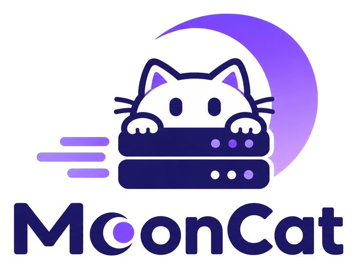

MoonCat
MoonBit 的 ASGI 3.0 服务器。接住连接，把请求拆成 scope、receive、send 交给应用。HTTP/1.1、HTTP/2、HTTP/3 与 WebSocket 同端口。
$
moon add moonbitstack/mooncat

- ASGI 3.0应用按它来写
- h1 h2 h3TCP 与 UDP 上的 HTTP
- 12000默认端口
- native · wasm有异步套接字即可
它做什么一张图看完全部工作
mooncat 管服务器里与协议无关的那一半：套接字、连接、分段到达的请求、分段离开的响应。应用拿到 scope，以及读请求体、写响应的两个函数。路由到模板都属于应用。
一个端口，每一代协议
选择发生在连接打开时：TLS 在握手定，明文看头几个字节。最后都落到同一处。
| 线上协议 | 由什么决定 | 应用看到什么 |
|---|---|---|
HTTP/1.1 | 明文里的请求行 | 一个 http scope；请求体一段一段到达 |
HTTPS | TLS 握手，ALPN 里给出 h2 与 http/1.1 | 同一个 scope，scheme 为 https，证书在 extensions 里 |
h2c | 连接前言 PRI * HTTP/2.0 | 同一个 scope，每条流一个 |
HTTP/2 | ALPN 应答 h2 | 每条流一个 scope，每条流一个任务 |
HTTP/3 | UDP 上的同一个端口号 | 每条流一个 scope，由 alt-svc 告知 |
0-RTT | 随握手一起到的 QUIC 请求，且 early_data 为 Accept | 同一个 scope，带 Early-Data: 1，应用知道它可能是重放 |
ws · wss | 开头的 Upgrade: websocket | 一个 websocket scope：connect、accept、receive、send、close |
快速开始
moon add moonbitstack/mooncat moon add moonbitstack/moonasgi
应用是接受三个参数的异步函数，用两个事件作答：
/// 谁连上来就问候谁的服务器。 async fn main { let app : @moonasgi.AsgiApp = (_scope, _receive, send) => { send( @moonasgi.Event::HttpResponseStart( status=200, headers=[("content-type", "text/plain; charset=utf-8")], trailers=false, ), ) send(@moonasgi.Event::HttpResponseBody(body=b"hello from mooncat\n", more_body=false)) } @mooncat.serve(app, host="127.0.0.1", port=12000) }
moon run src/main --target native curl -i http://127.0.0.1:12000/
$ curl --noproxy '*' -i http://127.0.0.1:12000/ HTTP/1.1 200 OK content-type: text/plain; charset=utf-8 server: mooncat date: Mon, 02 Nov 2026 10:11:23 GMT content-length: 19 hello from mooncat
一次实录moon run src/examples/09-tour
tour 示例起真实服务器，用真实客户端打，打印结果后停下。以下均为实录。
$ moon run src/examples/09-tour --target native # configuration, as the command line reads it bind 127.0.0.1:12001 keep-alive 30000 ms retire after 100 trusted proxies 127.0.0.1, 10.0.0.0 tls false # lifespan: startup and shutdown bracket the listener order startup, serving, shutdown # an app on a socket, answered by a real client INFO: Waiting for application startup. INFO: Application startup complete. INFO: Started server process on http://127.0.0.1:12031 INFO: 127.0.0.1:56255 - "GET /echo/moonbit HTTP/1.1" 200 OK GET /echo/moonbit 200 moonbit INFO: 127.0.0.1:56256 - "GET / HTTP/1.1" 200 OK GET / 200 root server header mooncat date header true # keep-alive, and the request limit that retires a server three requests 200, 200, 200 the fourth refused, the server retired # a trusted proxy is believed, an untrusted one is not believed https from 203.0.113.7 ignored http from 127.0.0.1 # websocket: connect, echo, close sent 'one', got echo one sent 'two', got echo two # http/2 over cleartext listening h2c on 127.0.0.1:12036 try it with curl --http2-prior-knowledge http://127.0.0.1:12036/echo/h2 # graceful shutdown drains what is in flight stop asked for while it was still running the slow request 200 slow
各个包
只答 TCP 的程序不会链进 UDP 那一半。拆分看链接成本，不看阅读顺序。
| 包 | 用来做什么 |
|---|---|
mooncat | 入口函数的重导出，小程序的全部就是 @mooncat.serve |
mooncat/config | Config、访问与错误日志、HTTP 日期 |
mooncat/lifespan | 监听之前的 startup，之后的 shutdown |
mooncat/proxy | 受信代理报告的客户端与 scheme |
mooncat/serve | 接受循环、HTTP/1.1、HTTP/2、WebSocket、TLS、多 worker |
mooncat/cli | 命令行，以及把 run(app) 当作整个程序 |
mooncat/quic | HTTP/3：UDP 套接字、数据报循环与请求流 |
有异步套接字的地方就能服务：native 与 wasm，测试两边都跑。QUIC 只在 native。